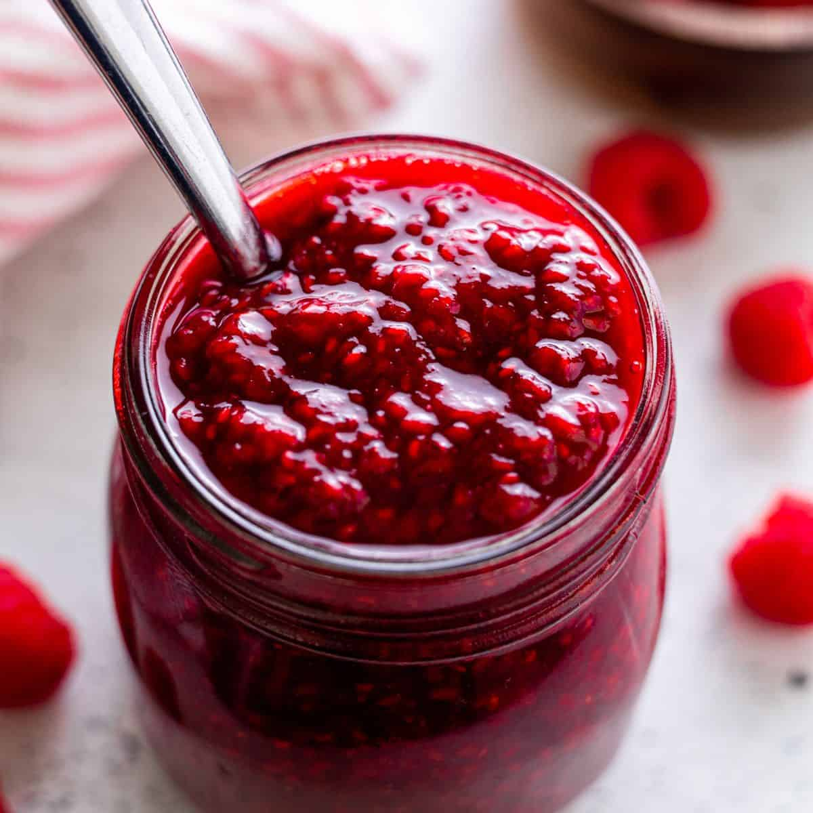

Easy Raspberry Compote

This quick and easy Raspberry Compote Recipe makes a great (and berry full of flavour) dessert topping for puddings, cakes, ice cream, sorbet, and more.
Yield: 1 cup
Ingredients
- 1 1/2 cups ripe raspberries
- 1/4 cup granulated sugar or extra fine sugar
- 1/2 tsp fresh lemon juice
Instructions
- In a pan, combine the raspberries, the sugar and the lemon juice.
- Over medium-high heat, bring to a boil, and then quickly reduce heat to low, and allow the mixture to simmer, stirring frequently, until the sugar is fully dissolved and the mixture thickens to a syrupy consistency (about 5–7 minutes).
- Remove the mixture from the heat and transfer to a bowl.
- Serve warm or cool. Store covered in the refrigerator for up to a week.
Note: To make seedless compote, strain crushed berries through a sieve first and measure the juice to 1 1/2 cups. You will need more than 1 1/2 cups of raspberries to make this amount of juice.